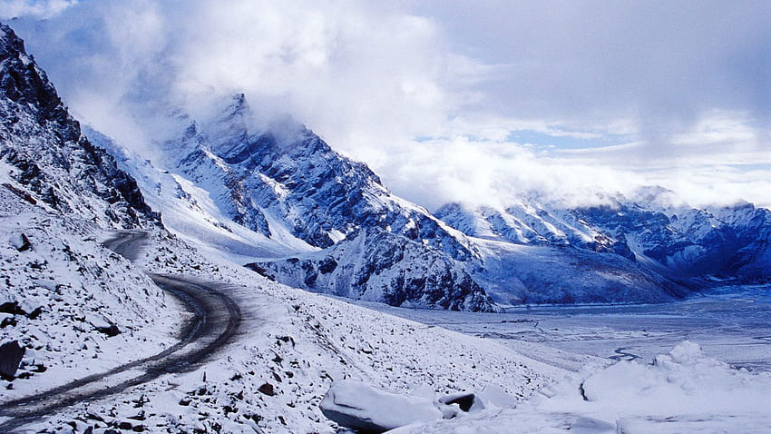
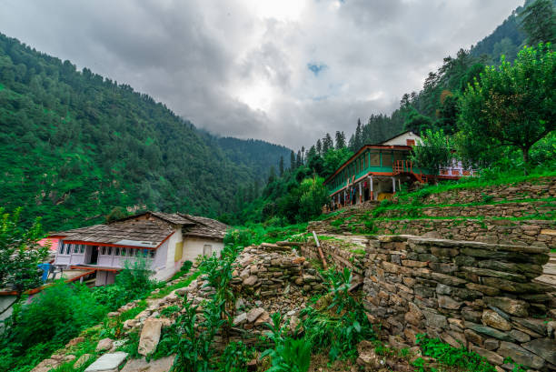
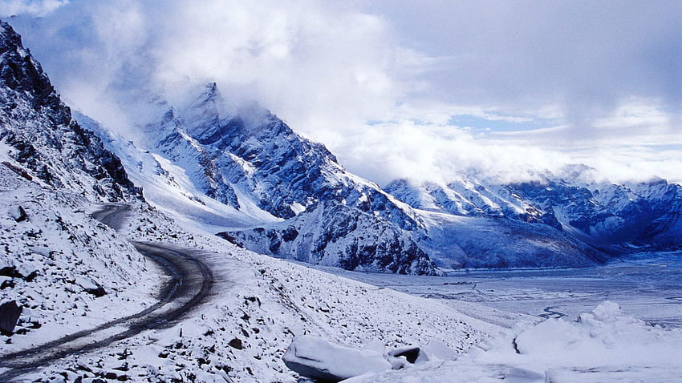
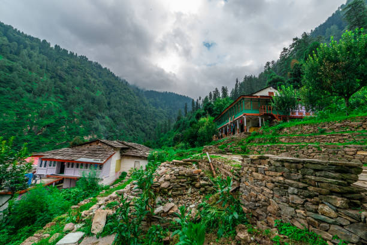

About Manali
Situated near the end of valley, Manali is one of the most attractive tourist spot not only of Himachal Pradesh, but of International fame also. Manali is synonymous streams and birdsong, forests and orchards and grandees of snow-capped mountains. Manali is the real starting point of an ancient trade route which crosses the Rohtang and Baralacha passes, and runs via Lahul and Ladakh to Kashmir while divergent road connects it with Spiti. Now the motor link have been provided up to Leh in Jammu & Kashmir, Pangi valley in Chamba and Kaza of Lahul & Spiti. There are regular bus services to these places from Manali during summer season. It is situated at a distance of 45 kms from Kullu.
There is an interesting legend about Manali which goes to say that Manu, the author of ’Manu Samhita’, after the great deluge first stepped on the earth from the celestial boat at a place in this land. The particular spot where he established his abode was the present Manali which is regarded as the changed name of ’Manu-Alaya’, the abode of Manu. The temple dedicated to Manu is still existing in the Manali village.
When sound of exhilaration seems to be coming far above from sky and only colorful para-gliders could be spotted above head, the site is most probably Solang Valley of Manali Hill Station, which has a uniqueness that stands out from any other paragliding site in India. What more this is one facet of this hill city, like honeymooner trying to pose wearing ski gears rather than actually willing to try the fun of skiing. Add to that elders on some sort of minor pilgrimage to various temples in Manali, individual getting holy dip in hot water springs, families bonding in picnic spots and many other images, and this hill city comes alive in front of eyes.
A part of Beas River Valley, Manali is situated at an altitude of more than 2000 m from where the eyes fall on the views of forests, orchards, river, mountains ranges and more, for nothing but sheer visual delight. The place once used to serve trade purposes via Manal - Leh route; now the same route is used for the purpose of adventure mainly for the bikers and jeep riders.
To fill the Trip Booking Form Click Here.
For more detailed information, you can visit Wikipedia.